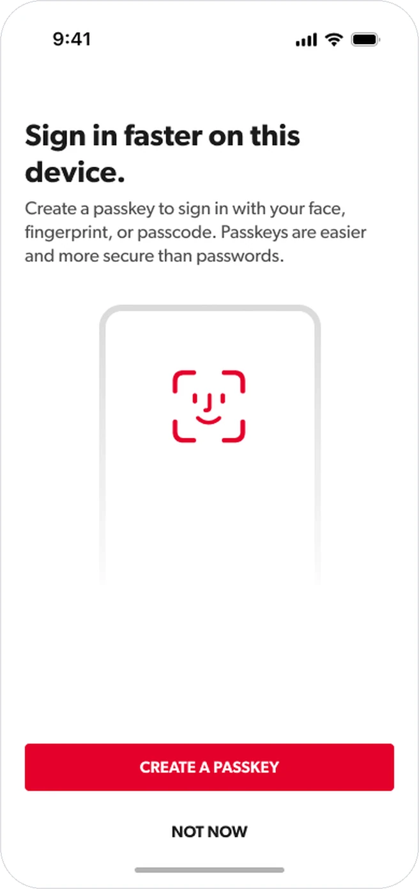
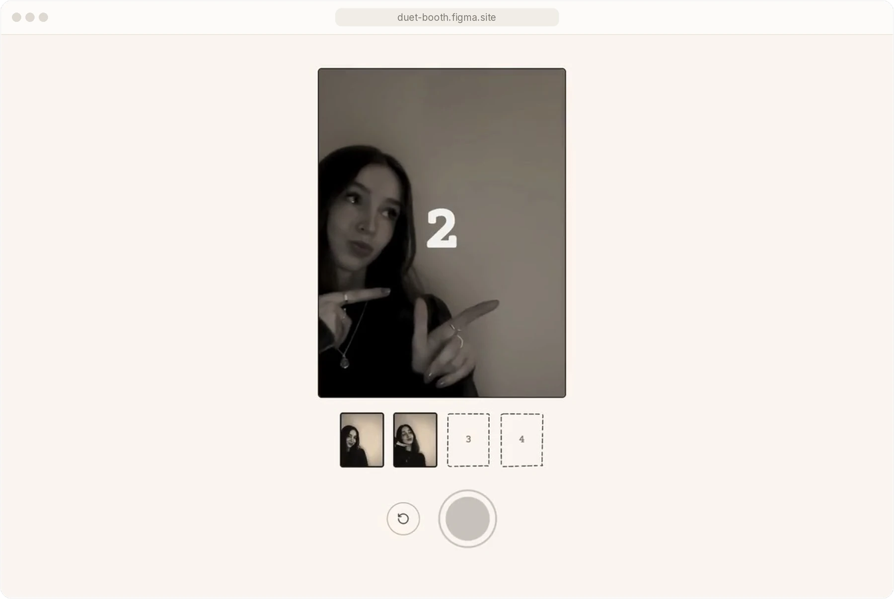

CurrentInter Tight 300 headline, Inter for everything else


A · EditorialInter Tight + Instrument Serif italic + DM Mono
B · Soft & warmFraunces (soft, wonky) + Inter + JetBrains Mono
C · DarkroomNewsreader + Inter + IBM Plex Mono "date stamp"